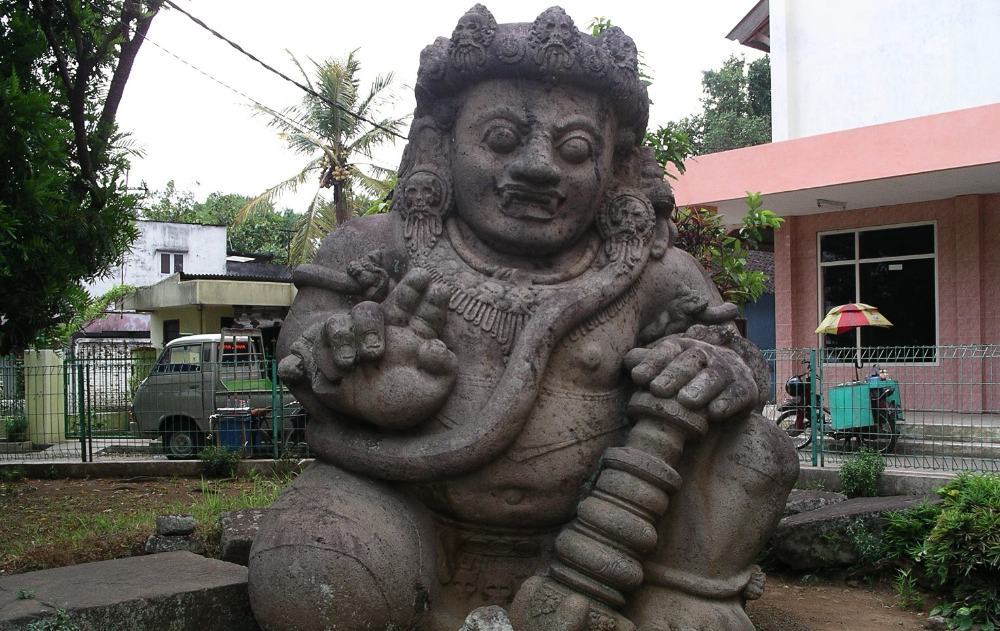
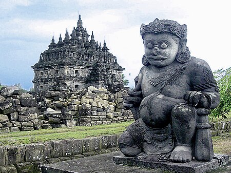
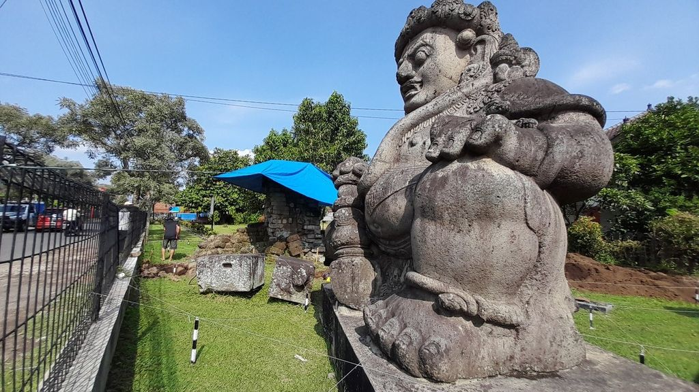

Arca dwarapala
Arca dwarapala peninggalan Kerajaan Singasari
Dwarapala adalah patung penjaga gerbang atau pintu dalam ajaran Siwa dan Buddha, berbentuk manusia atau monster. Biasanya dwarapala diletakkan di luar candi, kuil atau bangunan lain untuk melindungi tempat suci atau tempat keramat di dalamnya. Dwarapala biasanya digambarkan sebagai makhluk yang menyeramkan. Bergantung pada kemakmuran suatu kuil, jumlah arca dwarapala dapat hanya sendirian, sepasang, atau berkelompok.
Dwarapala terbesar di Jawa terdapat di Singosari terbuat dari batu andesit utuh setinggi 3,7 meter. Di Pulau Jawa dan Bali arca dwarapala biasanya diukir dari batu andesit, berperawakan gemuk dan digambarkan dalam posisi tubuh setengah berlutut, menggenggam senjata gada. Sedangkan dwarapala di Kamboja dan Thailand memiliki perawakan tubuh lebih langsing dengan posisi tubuh tegak lurus memegang gada di tengah tepat di antara kedua kakinya. Patung dwarapala di Thailand dibuat dari tembikar tanah liat yang dilapisi glazur pucat susu. Patung seperti ini dibuat pada masa Kerajaan Sukhothai dan Ayutthaya (abad ke-14 hingga ke-15) diproduksi oleh beberapa tempat pembakaran tembikar di Thailand utara.
Bangunan suci yang kecil biasanya memiliki hanya satu arca dwarapala. Sering kali dwarapala diletakkan berpasangan di antara gerbang masuk. beberapa situs bangunan suci yang lebih besar memiliki empat, delapan, bahkan dua belas arca dwarapala yang menjaga empat penjuru mata angin sebagai Lokapala, dewa penjaga empat atau delapan penjuru mata angin. Dalam budaya Jawa, dwarapala dijadikan figur penjaga keraton, misalnya dapat ditemukan di gerbang masuk Keraton Yogyakarta dan gerbang Kamandungan Lor Keraton Surakarta.
Foto Arca dwarapala
Foto 1
Foto 2
Arca Dwarapala, peninggalan agung dari Kerajaan Singasari, memancarkan keindahan seni dan spiritualitas yang melampaui batas waktu. Sebagai penjaga setia gerbang suci, arca ini menggambarkan kemegahan budaya dan kepercayaan pada masa lalu. Dengan ukiran batu andesit yang megah, Dwarapala menjadi saksi bisu kekayaan warisan sejarah dan keagungan seni rupa. Dalam postur setengah berlutut dan gada yang teguh, mereka menjelma sebagai penjaga kesucian, memberikan perlindungan bagi tempat-tempat keramat di sekitarnya. Sepasang Dwarapala di gerbang masuk suatu tempat suci adalah pemandangan yang tak hanya memikat mata, tetapi juga menyiratkan makna mendalam akan keberanian dan kebijaksanaan yang diteruskan dari generasi ke generasi. Sebagai penjaga setia, arca Dwarapala terus berkisah tentang keelokan dan keagungan masa silam, membiarkan kita menyelami keajaiban warisan budaya yang mempesona.
sumber: https://id.wikipedia.org/wiki/Dwarapala